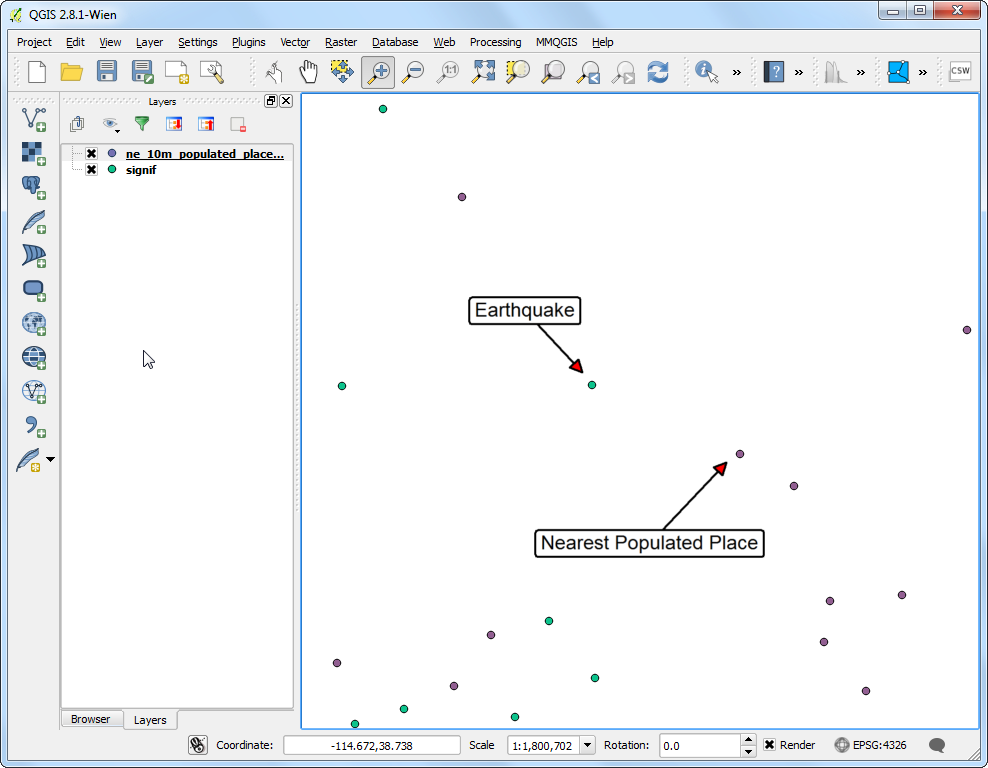
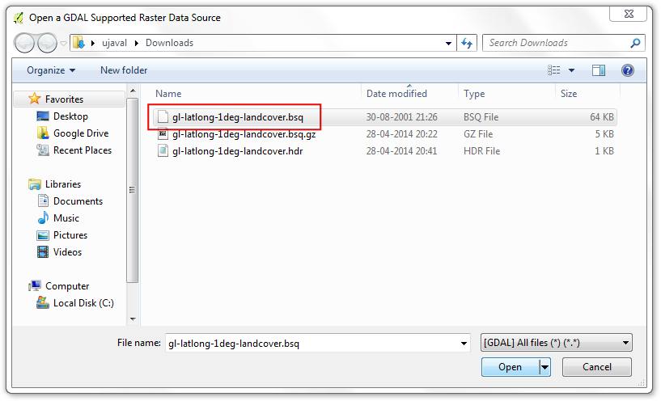
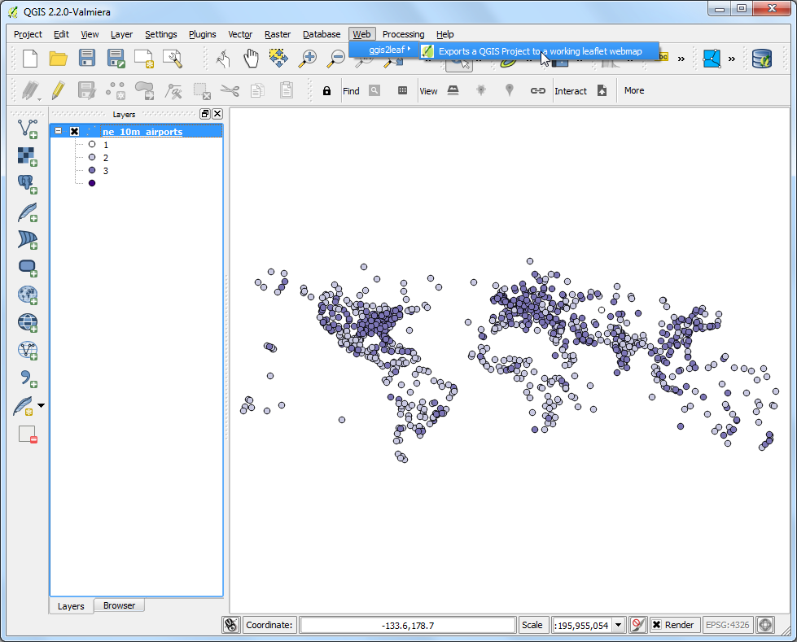

Leaflet Διαδικτυακοί Χάρτες με το qgis2leaf
[ Download PDF
A4
Letter ]
Warning
qgis2leaf plugin is no longer in active development. The functionality of
this plugin is folded into a new plugin called qgis2web.
Το Leaflet είναι μια δημοφιλής, ανοικτού κώδικα βιβλιοθήκη Javascript για την κατασκευή εφαρμογών διαδικτυακών χαρτών. Το πρόσθετο qgis2leaf παρέχει έναν απλό τρόπο εξαγωγής του QGIS χάρτη σας, σε έναν λειτουργικό διαδικτυακό χάρτη βασισμένο σε leaflet. Αυτό το πρόσθετο είναι ένας χρήσιμος τρόπος, για να ξεκινήσετε με τους διαδικτυακούς χάρτες και να δημιουργήσετε έναν διαδραστικό διαδικτυακό χάρτη από τα στατικά GIS επίπεδα δεδομένων σας.
Επισκόπηση εργασίας
Θα δημιουργήσουμε έναν leaflet διαδικτυακό χάρτη των αεροδρομίων σε όλον τον κόσμο.
Άλλες δεξιότητες που θα μάθετε
Χρήση της δήλωσης SQL CASE στο Field Calculator, για τη δημιουργία νέων πεδίων τιμών, βασισμένες σε διαφορετικές συνθήκες.
Εντοπισμός και χρήση προσαρμοσμένων SVG εικονιδίων στο QGIS.
Διαδικασία
Εγκαταστήστε το πρόσθετο qgis2leaf πηγαίνοντας στο . Σημειώστε ότι το πρόσθετο είναι προς το παρόν μαρκαρισμένο ως experimental, οπότε θα πρέπει να τσεκάρετε το Show also experimental plugins στις Ρυθμίσεις Πρόσθετων. (See Χρησιμοποιώντας Πρόσθετες Λειτουργίες για περισσότερες πληροφορίες σχετικά με την εγκατάσταση πρόσθετων στο QGIS)

Αποσυμπιέστε το αρχείο ne_10m_airports.zip. Ανοίξτε το QGIS και πηγαίνετε στο . Πηγαίνετε στην τοποθεσία όπου αποσυμπιέστηκαν τα αρχεία και επιλέξτε το ne_10m_airports.shp. Πατήστε OK.

Μόλις φορτωθεί το επίπεδο ne_10m_airports, χρησιμοποιήστε το εργαλείο Identify για να κάνετε κλικ σε οποιοδήποτε χαρακτηριστικό και να δείτε τις ιδιότητες του. Θα δημιουργήσουμε έναν χάρτη αεροδρομίου όπου θα ταξινομήσουμε τα αεροδρόμια σε 3 κατηγορίες. Η ιδιότητα type θα είναι χρήσιμη όταν ταξινομήσουμε τα χαρακτηριστικά.

Κάντε δεξί κλικ στο επίπεδο ne_10m_airports και επιλέξτε Open Attribute Table.

Στο παράθυρο διαλόγου του πίνακα χαρακτηριστικών, πατήστε το κουμπί Toggle Editing. Μόλις το επίπεδο είναι σε κατάσταση επεξεργασίας, πατήστε το κουμπί Open Field Calculator.

Θέλουμε να δημιουργήσουμε μια νέα ιδιότητα που θα ονομάζεται type_code, όπου θα δίνουμε στα μεγάλα αεροδρόμια την τιμή 3, στα μεσαίου μεγέθους αεροδρόμια την τιμή 2 και σε όλα τα υπόλοιπα την τιμή 1. Μπορούμε να χρησιμοποιήσουμε τη δήλωση CASE και να γράψουμε μια έκφραση η οποία θα βλέπει την τιμή της ιδιότητας type και θα δημιουργεί μια ιδιότητα type_code βασισμένη στην κατάσταση. Τσεκάρετε το κουτάκι Create a new field και εισάγετε type_code ως Output field name. Επιλέξτε Whole number (integer) ως Output field type. Στο παράθυρο Expression, εισάγετε το κείμενο που ακολουθεί.
CASE WHEN "type" LIKE '%major%' THEN 3
WHEN "type" LIKE '%mid%' THEN 2
ELSE 1
END

Πίσω στο παράθυρο Attribute Table, θα δείτε μια νέα στήλη στο τέλος. Ελέγξτε ότι η έκφραση σας λειτούργησε σωστά και πατήστε το κουμπί Toggle Editing για να αποθηκεύσετε τις αλλαγές.

Τώρα θα μορφοποιήσουμε το επίπεδο των αεροδρομίων χρησιμοποιώντας την ιδιότητα type_code που μόλις δημιουργήθηκε. Κάντε δεξί κλικ στο επίπεδο ne_10m_airports και επιλέξτε Properties.

Επιλέξτε την καρτέλα Style στο παράθυρο διαλόγου Layer Properties. Επιλέξτε μορφοποίηση Categorized από το μενού και επιλέξτε type_code ως Column. Επιλέξτε μια βαθμίδα χρώματος της αρεσκείας σας και πατήστε Classify. Πατήστε OK για να επιστρέψετε στο κυρίως παράθυρο του QGIS.

Εδώ θα δείτε έναν ωραία μορφοποιημένο χάρτη αεροδρομίων. Ας το εξάγουμε αυτό για να δημιουργήσουμε έναν διαδραστικό διαδικτυακό χάρτη. Πηγαίνετε στο .

Στο παράθυρο διαλόγου QGIS 2 Leaflet, πατήστε Get Layers για να δείτε την ανανεωμένη λίστα επιπέδων. Επιλέξτε Full screen για να δείτε τον διαδικτυακό χάρτη σε πλήρη οθόνη. Επιλέξτε layer extent ως Extent του εξαγόμενου χάρτη. Επιλέξτε Output project folder στο σύστημα σας, όπου θέλετε το πρόσθετο να γράψει τα αρχεία που θα παραχθούν. Πατήστε OK.

Μόλις τελειώσει η διαδικασία εξαγωγής, εντοπίστε το φάκελο που παράχθηκε στον δίσκο σας. Ανοίξτε το αρχείο index.html με ένα πρόγραμμα περιήγησης. Θα δείτε έναν διαδραστικό διαδικτυακό χάρτη που είναι αντίγραφο του QGIS χάρτη. Μπορείτε να κάνετε μεγέθυνση και μετακίνηση γύρω από τον χάρτη και επίσης να κάνετε κλικ σε οποιαδήποτε από τα χαρακτηριστικά, για να σας ανοίξει ένα αναδυόμενο παράθυρο με τις πληροφορίες τους. Μπορείτε να αντιγράψετε τα περιεχόμενα αυτού του φακέλου σε έναν διακομιστή για να έχετε έναν πλήρες διαδικτυακό χάρτη με όλα του τα χαρακτηριστικά.

Τώρα θα ανακαλύψουμε κάποιες εξειδικευμένες ιδιότητες αυτού του πρόσθετου που θα σας επιτρέψει να προσαρμόσετε τον χάρτη περαιτέρω. Εάν παρατηρήσατε, το αναδυόμενο παράθυρο περιείχε όλες τις ιδιότητες του χαρακτηριστικού. Κάποιες ιδιότητες δεν είναι χρήσιμες και το παράθυρο φαίνεται άσχημο. Μπορεί να αντικαταστήσουμε το προεπιλεγμένο αναδυόμενο παράθυρο με το δικό μας προσαρμοσμένο HTML, για να το κάνουμε να φαίνεται καλύτερα. Αυτό επιτυγχάνεται με το να προσθέσουμε το προσαρμοσμένο HTML σε μια στήλη με το όνομα html_exp. Κάντε δεξί κλικ στο επίπεδο ne_10m_airports και επιλέξτε Open Attribute Table.

Στο παράθυρο διαλόγου του πίνακα χαρακτηριστικών, πατήστε το κουμπί Toggle Editing. Μόλις το επίπεδο είναι σε κατάσταση επεξεργασίας, πατήστε το κουμπί Open Field Calculator.

Τσεκάρετε το κουτάκι Create a new field και εισάγετε html_exp ως Output field name. Επιλέξτε Text (string) ως Output field type. Εφόσον θα δημιουργήσουμε ένα μεγάλου μήκους αλφαριθμητικό, επιλέξτε 200 ως Output field width. Εισάγετε την έκφραση που ακολουθεί στην περιοχή Expression. Αυτή η έκφραση που φαίνεται περίεργη, απλώς προσδιορίζει έναν HTML πίνακα και υποκαθιστά τιμές κελιών από χαρακτηριστικά iata_code, name and type. Ελέγξτε το Output preview για να βεβαιωθείτε ότι η έκφραση είναι σωστή.
concat('<h3>', "iata_code", '</h3><table>', '<tr><td>Airport Name: <b> ',
"name", '</b></td></tr><tr><td>Category: <b> ', "type",
'</b></td></tr></table>')
Note
Το αρχείο τύπου shapefile, μπορεί να περιέχει μέσα σε ένα πεδίο μέχρι και 254 χαρακτήρες.

Πίσω στο παράθυρο Attribute Table, θα δείτε μια νέα στήλη στο τέλος. Ελέγξτε ότι η έκφραση σας λειτούργησε σωστά και πατήστε το κουμπί Toggle Editing για να αποθηκεύσετε τις αλλαγές.

Τώρα κάντε εξαγωγή τον χάρτη ξανά, χρησιμοποιώντας το .

Κάντε τις ίδιες επιλογές όπως και πριν.

Πηγαίνετε στον φάκελο που παράχθηκε μόλις τελειώσει η διαδικασία εξαγωγής. Θα έχετε έναν υποφάκελο με την παρούσα χρονική στιγμή. Εντοπίστε το αρχείο index.html μέσα στο φάκελο και ανοίξτε το με ένα πρόγραμμα περιήγησης. Κάντε κλικ πάνω σε οποιοδήποτε χαρακτηριστικό και δείτε το αναδυόμενο παράθυρο . Θα παρατηρήσετε ότι πλέον είναι πιο ευανάγνωστο και ενημερωτικό.

Ακόμα μια χρήσιμη ιδιότητα του πρόσθετου qgis2leaf είναι η δυνατότητα να προσδιορίζει ένα προσαρμοσμένο εικονίδιο για να το χρησιμοποιεί με τον διαδικτυακό χάρτη. Αυτό επιτυγχάνεται με τον προσδιορισμό της διαδρομής του προσαρμοσμένου εικονιδίου, σε ένα πεδίο που ονομάζεται icon_exp`. Θα δημιουργήσουμε ένα νέο επίπεδο που θα περιλαμβάνει μόνο τα μεγάλα αεροδρόμια και μορφοποίηση χρησιμοποιώντας ένα SVG εικονίδιο. Εντοπίστε το εργαλείο Select features using an expression από τη γραμμή εργαλείων.

Εισάγετε την έκφραση που ακολουθεί και πατήστε Select για να επιλέξετε όλα τα μεγάλα αεροδρόμια.

Κάντε δεξί κλικ στο επίπεδο ne_10m_airports και επιλέξτε Save Selection As....

Στο παράθυρο διαλόγου Save vector layer as..., ονομάστε το αρχείο που θα αποθηκευτεί ως major_airports.shp. Τσεκάρετε το κουτάκι Add saved file to map και πατήστε OK.

Μόλις φορτωθεί το επίπεδο major_airports στο QGIS, κάντε δεξί κλικ πάνω του και επιλέξτε Open Attribute Table.

Στο παράθυρο διαλόγου του πίνακα χαρακτηριστικών, πατήστε το κουμπί Toggle Editing. Μόλις το επίπεδο είναι σε κατάσταση επεξεργασίας, πατήστε το κουμπί Open Field Calculator.

Στο παράθυρο διαλόγου Field Calculator, εισάγετε icon_exp ως Output field name. Κάντε τον τύπο Text (string). Στην περιοχή Expression, εισάγετε την έκφραση που ακολουθεί.

Αποθηκεύστε ότι επεξεργαστήκατε, πατώντας το κουμπί Toggle Editing στο Attribute Table.

Ανοίξτε το πρόσθετο qgis2leaf από το . Πατήστε το κουμπί Get Layers για να φέρετε και τα δύο επίπεδα από το QGIS. Υπάρχουν πολλά διαφορετικά προκατασκευασμένα επίπεδα πλακιδίων, διαθέσιμα για βάσεις χαρτών. Σε αυτόν τον χάρτη, Μπορούμε να δοκιμάσουμε κάτι διαφορετικό και να φορτώσουμε το Stamen Watercolor ως Basemap. Πατήστε OK.

Εάν θυμάστε, διευκρινίσαμε το airport.svg ως το εικονίδιο για τα αεροδρόμια. Πρέπει να προσθέσουμε αυτό το εικονίδιο χειροκίνητα στον παραγόμενο φάκελο. Το QGIS περιλαμβάνει μια μεγάλη συλλογή εικονιδίων. Στα Windows, αυτά τα εικονίδια βρίσκονται στο . Η διαδρομή μπορεί να διαφέρει ανάλογα με την πλατφόρμα και τον τύπο εγκατάστασης. Εντοπίστε αυτόν τον φάκελο και επιλέξτε ένα εικονίδιο της αρεσκείας σας. Για τον χάρτη μας, μπορούμε να δοκιμάσουμε το εικονίδιο amenity=airport.svg που βρίσκεται υπό την κατηγορία transport.

Κάντε αντιγραφή και επικόλληση αυτό το εικονίδιο στον παραγόμενο φάκελο, που είχατε διευκρινίσει όταν κάνατε εξαγωγή του χάρτη. Μετονομάστε το ως airport.svg.

Τώρα ανοίξτε το αρχείο index.html που βρίσκεται στο φάκελο. Θα δείτε μια όμορφη βάση χάρτη με τα προσαρμοσμένα μας εικονίδια, για τα μεγάλα αεροδρόμια. Επίσης, θα παρατηρήσετε τον πίνακα επιπέδου στην πάνω δεξιά γωνία, ο οποίος έχει επιλογές εμφάνισης και για τα δυο επίπεδα.

Hope this tutorial gives you a head start in creating web maps. Below is the
live interactive map created for this tutorial.